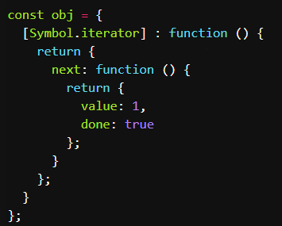

遍历器（Iterator）就是这样一种机制。它是一种接口，为各种不同的数据结构提供统一的访问机制。任何数据结构只要部署 Iterator 接口，就可以完成遍历操作（即依次处理该数据结构的所有成员）。
遍历器对象本质上，就是一个指针对象。调用next访问下一个对象，访问done属性确定是否结束
ES6 规定，默认的 Iterator 接口部署在数据结构的Symbol.iterator属性，或者说，一个数据结构只要具有Symbol.iterator属性，就可以认为是“可遍历的”（iterable）。[Symbol.iterator]属性本身是一个函数，就是当前数据结构默认的遍历器生成函数。执行这个函数，就会返回一个遍历器。
遍历器生成函数->遍历器->每一步遍历结果

原生具备 Iterator 接口的数据结构有：
* Array
* Map
* Set
* String
* TypedArray
* 函数的 arguments 对象
* NodeList 对象
注意对象是没有遍历器接口的
一个对象如果要具备可被for...of循环调用的 Iterator 接口，就必须在Symbol.iterator的属性上部署遍历器生成方法（原型链上的对象具有该方法也可）。

阮一峰：注意，普通对象部署数组的Symbol.iterator方法，并无效果。（给的例子是一个有length属性但没数字key的对象）
// 这个描述其实不严谨，有length属性的就是类数组对象
// 确切地说，当数字key不与length完全匹配时，匹配项正确给值，否则为undefined
// 当不存在length属性时，不进行遍历
如果Symbol.iterator方法对应的不是遍历器生成函数（即会返回一个遍历器对象），解释引擎将会报错。
有了遍历器接口，数据结构就可以用for...of循环遍历（详见下文），也可以使用while循环遍历。
（不过while需要手动生成遍历器，不是很方便）
除了for-of外，默认调用遍历器接口的场合
1.解构赋值（的右侧）

2.扩展运算符（借此可以将任何部署了 Iterator 接口的数据结构，转为数组）
3.yield*后面跟的是一个可遍历的结构，它会调用该结构的遍历器接口
4.由于数组的遍历会调用遍历器接口，所以任何接受数组作为参数的场合，其实都调用了遍历器接口。例如:
* for...of
* Array.from()
* Map(), Set(), WeakMap(), WeakSet()（比如new Map([['a',1],['b',2]])）
* Promise.all()
* Promise.race()
字符串也原生具有 Iterator 接口
可以覆盖原生的Symbol.iterator方法，达到修改遍历器行为的目的
=============================
Symbol.iterator方法的最简单实现是Generator 函数
此时不需要满足前述的接口格式

return方法和throw方法（可选）
return方法的使用场合是，如果for...of循环提前退出（通常是因为出错，或者有break语句或continue语句），就会调用return方法。如果一个对象在完成遍历前，需要清理或释放资源，就可以部署return方法。
function readLinesSync(file) {
return {
[Symbol.iterator]() {
return {
next() {
return { done: false };
},
return() {
file.close();
return { done: true };
}
};
},
};}
也可以手动调用return，例如
readLinesSync()[Symbol.iterator]().return()
throw方法主要是配合 Generator 函数使用，一般的遍历器对象用不到这个方法。参见Generator
=============================
其他
for...in循环读取键名，for...of循环读取键值（注意for-in本身是用来遍历对象的，遍历数组时，若数组原型被修改，会出现问题）（而且for-in得到的键名是字符串，某些情况下，for...in循环会以任意顺序遍历键名）
（如果要通过for...of循环，获取数组的索引，可以借助数组实例的entries方法和keys方法）
对于字符串来说，for...of循环还有一个特点，就是会正确识别 32 位 UTF-16 字符。
DOM NodeList 对象、arguments对象具有具有 Iterator 接口
但注意一般的类数组对象本身是没有Iterator 接口的，可以使用Array.from方法将其转为数组。
利用Object.entries和解构赋值来遍历对象
for (let [key, value] of Object.entries(obj)) {
console.log(key, '->', value);
}
for-of可以与break、continue和return配合使用（对比forEach的优势）
（不过在leetcode上刷题的时候，还是原始for循环的性能更好一些）